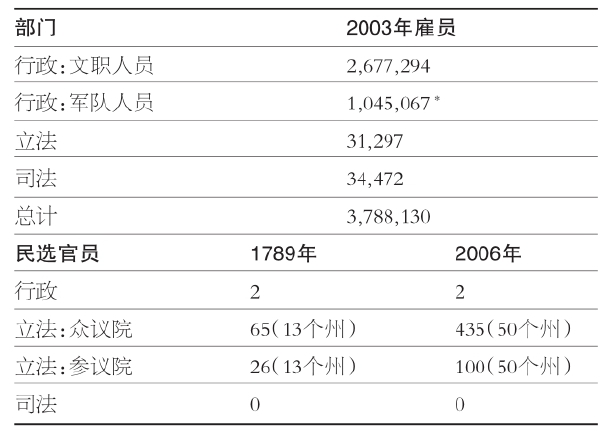
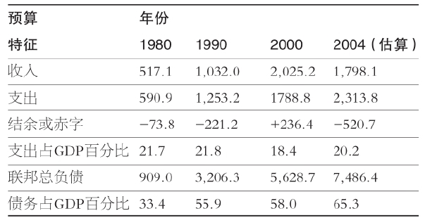
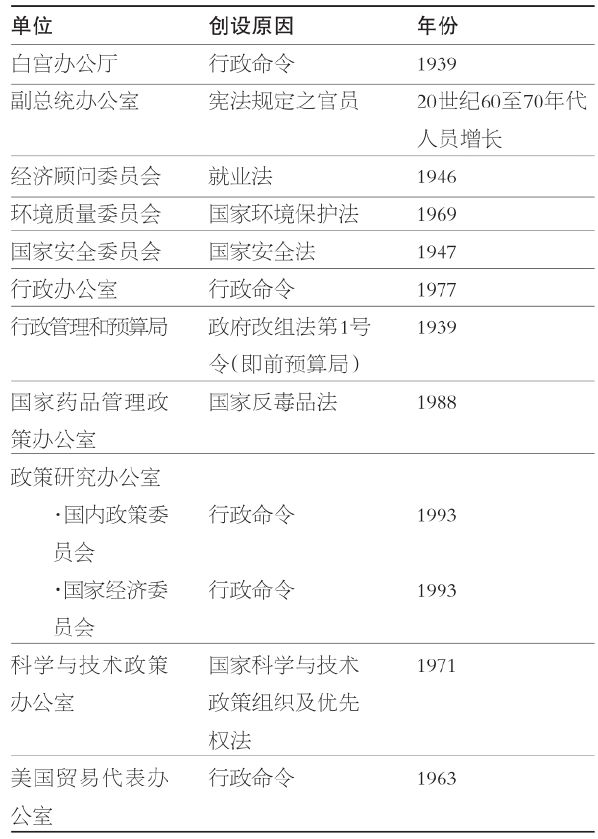
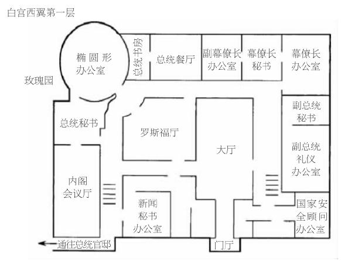
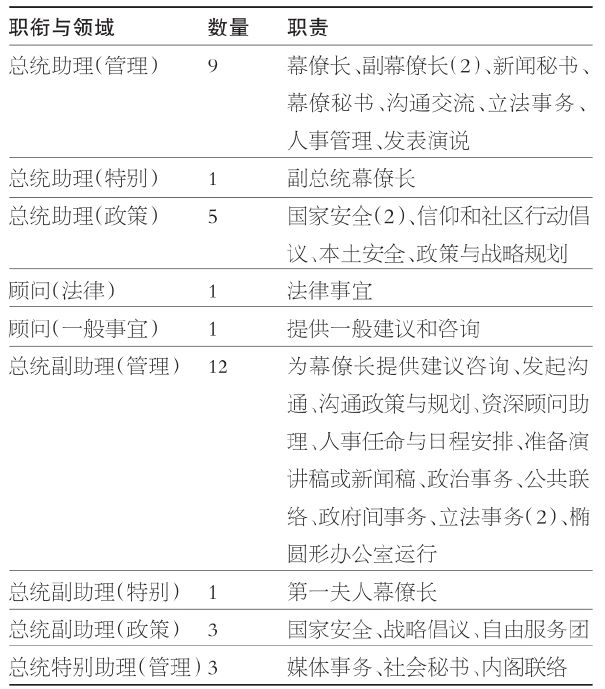
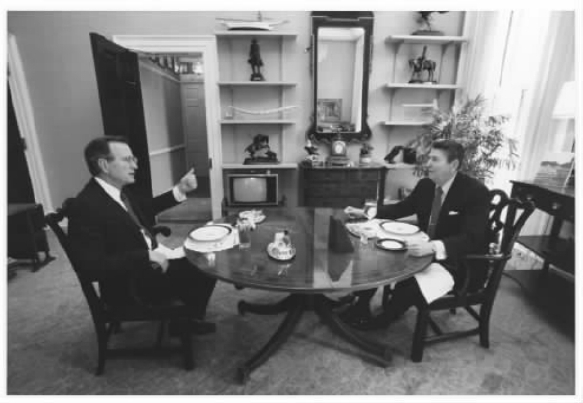

合理警告：有些主题因过于重要而不那么有趣。第五章和第六章便充满这些话题——组织、管理、联络、政策提出、法律制定、预算等。请继续下去。我一直试图让相关讨论变得易读。在开国元勋们设计的分权体系之下，这些主题的重要性不是我能改变的。他们意识到领导力的必要性，却警惕着易于实现的控制力。因此，以下两章将详细描述总统面临的一项挑战，即超出既有权力去竭力满足民众对领导力的期待。稍加思索，这听起来既饶有趣味又非常重要。
宪法第二条首句，“行政权力赋予美利坚合众国总统”，或许本来暗含着如下措辞：“总统负责衔接政府其他部分。”开国元勋们创造了由若干部门组成的政府。作为唯一的全国选举的领导人和官僚分支的首长，毫无疑问，总统将为所有其他部分负责。这个事实本身，就会促进总统留意整个政府所发生的事。
那么，看看政府变成了何种模样。《2005——2006年美国政府指南》列出了行政分支中的下列单位［除将要在下面讨论的总统办事机构（Executive Office of the President）外］：15个内阁部门；59个独立机构和政府公司、51个各种委员会、理事会；4个准官方机构和若干多边或双边组织。并且，这些机构只是冰山之一角。例如，国防部拥有3个部门，每个军种一个部门 [37] ，16个部局，以及若干作战司令部和野外行动部门。最近创建的国土安全部拥有2位助理部长、7位主管、1位副部长、5位业务副部长和1位海岸警卫队司令。行政分支中还有若干独立的组织单位，负责期货交易、产品安全、人文艺术、邮政资费、交通安全，以及其他各个方面。
组织机构管理着工作人员，在联邦政府中就有几百万工作人员。表5.1显示了具体人数。联邦雇员总数，包括文职人员与军队人员，逼近400万人——大约是洛杉矶总人口的规模。表5.1还显示了位于华盛顿的选任官员数目。请注意，立法者的数目增加，对参议院而言反映了州的增加，对众议院而言则反映了人口数目的上升——直到1911年众议院席位被限定于435个。行政长官的数目则保持在一位总统和一位副总统。现在，来看看雇员数目：由两位民选长官管理的几百万人；立法者们管理的超过3万人。
但是，你猜怎么样？因为多方面的原因，近年来联邦雇员人数实际上下降了。现在，更多的联邦政府工作改由州和地方来完成，在过去20年中，州和地方雇员数量增加了40%（现在逼近2000万）。也存在这种情况，即以前由政府雇员从事的工作现在转包给私人公司。并且，兵役现在是志愿的（并非义务役）和“高科技的”。这些变化减少了雇员数目，却增加了管理问题和问责问题。联邦项目，如医疗补助制度和犯罪控制等，可能会交给下级政府去处理，但是总统依然要对最终结果负责。
表5.1 2003年联邦雇员

* 2002年数据。
来源：Statistical Abstract of the United States，2004-2005（Washington，DC：Government Printing Office，2005），322，331.
成本问题同样解释了总统对衔接工作的关注。尽管努力控制支出，成本数字还是缓慢增长并逐步扩大。表5.2显示了近几十年的统计情况。以前难以想象的政府赤字已经构成全部债务的极大份额。这些数字的单位是十亿美元，意味着许多项目的支出当以万亿来计算。2000年，资金收入实际上超过了支出，这是20世纪末代表经济蓬勃发展的一个显著成就。即便如此，联邦总债务还是继续攀升。从1980年到2004年，收入增长超过3倍，支出却增长4倍。然而，衡量经济的标准指标，即支出占国内生产总值的百分比，一直保持在将近20%。更加令人苦恼的是日益攀升的总债务，它已数以万亿计，占国内生产总值的比重从三分之一扩展到三分之二。
表5.2 支出、赤字与债务（单位：十亿美元）

来源：Statistical Abstract of the United States，2004-2005（Washington，DC：Government Printing Office，2005），308.
一万亿有多少？这很难以人们的日常词汇来解释，但是当债务总额为1.5万亿时，有人曾经以美元钞票重量来计算，它相当于15艘航空母舰、12艘驱逐舰、2艘战列舰、2艘巡洋舰和17艘小舰船的重量之和。在本书写作之时，债务总额正朝向8万亿美元迈进。你可以自己计算，然后谈论一下瘦身的必要性吧！
就目前的意图而言，表5.2中的数字清楚表明了总统为施展行政权力，与政府中的常任官员建立联系的紧迫性。现存的施政方案拥有来自运作它们的组织，以及它们所服务的委托人的支持力量。在管理这个庞然大物的问题上，新一任总统早已落后于预定计划。即将离职的总统及其幕僚编制合适的预算，并准备好下一财政年度的支出和税收计划。然而，已在册项目的支出和执行效果不久就将由新一任领导人来“照看”。
总统必须与谁衔接，或者衔接什么内容？不管他们对发生之事负多大责任，事实是总统对其他治理部门的指导与控制有很大不同。就某些部门而言，总统能够招揽人马或解除任命，在一定程度上重新组织，并施展预算权力。其他部门则拥有不同程度的独立，从拥有自身合法性来源到公众或委托人的支持力量等。其类型——受白宫控制的程度由大到小——包括：与总统任期基本一致或根据总统意愿而任命的内阁各部及机构，任期重叠或长期任职的独立机构，联邦政府的其他分支，媒体以及其他政府与国际组织等。
内阁各部及主要机构
人们普遍承认，总统有权管理庞大的部门和机构。毕竟，总统拥有民主制之下合法性的“黄金标准”——经选举而任职。总统任命各部部长、行政官员和主管，这些人将会实现总统的政策偏好。集中的预算控制和对项目动议予以批准是总统施行其决策的杠杆。那些无法满足总统要求的人可能被免职。最近的例子是：克林顿总统在上任后不久便将国防部长莱斯·阿斯平解职，财政部长保罗·奥尼尔被小布什总统解职。
独立委员会
国会已经设置多个政策领域的委员会，这些领域被视为不宜受到党派之争的影响。这些委员会大多处理经济和规制方面的议题：证券交易、银行业、利率、贸易、航运、通讯和劳工关系等。这些委员会中最主要的是联邦储备体系，简称“美联储”，原因在于它关于利率的决定对经济的影响。总统任命委员会主席，但通常不能免除其职务；主席任期相互交叉以便提供政策连续性，通常超出一届总统的四年任期。这些委员会的构成要求照顾两党均衡，任何一党的成员优势不能超过一人。总统可以通过人事任命来影响政策，但是情况往往是，对其独立性的更大威胁来自他们对自身主管产业的特殊照顾引起的后果。
其他分支
联邦法官终身任期制是司法机构独立性的主要基础，这也由民选官员不能影响法庭个案判决的基本理念支撑。总统有机会通过提名法官的宪法特权来影响法院的方向，参议员也可以在“建议和同意”过程中影响法院。伴随政党分裂政府和微弱多数的频繁出现，近几十年来，联邦法院人事任命变得越来越充满争议。自1968年到目前为止，共和党总统拥有最多的机会来任命法官，在这40年（1968——2008）中，共和党人占据白宫28年。然而，在许多情形下，法官本来被认定为持有某种哲学信仰，最终展现的却完全不同（例如，肯尼迪任命的最高法院大法官拜伦·怀特被认为是温和自由主义者，上任后却是一位温和保守主义者；福特任命的约翰·保罗·史蒂文斯和老布什任命的戴维·苏特，情形恰恰相反）。
总统不可能停止影响国会。相反，挑战在于与参议院和众议院中复杂而迥异的组织之间确立衔接关系。两院中的委员会和小组委员会都与行政机构的主要框架近似对等（例如，国防部和参众两院的武装部队委员会）。因此，在官僚分支机构和相对应的委员会之间早已经存在衔接关系，这就是所谓“默契小三角”（cozy little triangles）的三个侧边中的两个（第三个侧边是受当前议题影响的私人和委托人利益）。总统若出于某种原因急于改变政策，就必须通过发展自身与立法者之间（包括委员会和小组委员会中的常任工作人员）的紧密纽带，来推翻以上这些持久的关联。
与政党领袖发展密切关系的必要性也同样重要，包括要弄清这些领袖需要获得白宫的哪些支持，来确立其在立法机构中的多数位置。在某些情形下，总统所在的政党可能在国会中与反对党主席展开连年的政策争辩。例如，肯尼迪和克林顿就职之时，民主党已经在艾森豪威尔与里根——布什时期把持参议院和众议院多数达六年之久。与此相似，在小布什就职之时，共和党人也已经占据参众两院多数达六年多。曾在与白宫对峙的过程中磨练了技能，国会山的执政党现在却必须变成啦啦队队长——这并不是永远轻而易举的转变，但如果总统幕僚足够机敏，过程会容易得多。
媒体
在两类核心机构，即总统直属机构与新闻界之间，存在着永久的紧张关系。“迟早，所有总统都会把问题归咎于媒体。他们是正确的。新闻界与总统之间天生就有敌意。他们互相需要，却又憎恨这种关系。” [38] 这两类机构之间也是天生具有竞争性的，甚至是对抗性的。总统凭借其通过民选任职而成为民众的代表。记者们相信，告诉民众总统的所作所为是其职业义务，甚至是宪法第一修正案规定的宪法义务。在国家政治方面，极少有比这种关系更为敏感的关系。白宫记者团是一帮来自于纸质媒体或电子媒体的记者，他们以总统官邸为工作场所，并且追随总统的外出日程。白宫新闻传播办公室提供每日简讯，并负责通过其他渠道告知公众全国性的政策决定。白宫新闻秘书逐渐成为总统政策决定的非正式发言人。
其他政府
联邦政府与50个州和数千个地方的治理机构以错综复杂的方式相关联。根据人口普查局2002年的统计，美国有超过87，500个地方政府单位（县、市、镇和特别地区），绝大多数都接受并使用联邦资金。
2003年，联邦政府对州政府和地方政府的资助拨款总额接近4000亿美元，大约占这些政府总支出的三分之一。这笔钱中超过85%花费在医疗补助、收入保障、交通运输和教育方面——这些项目是州和地方治理的核心。有些项目的支出以惊人的速度增长：对医疗补助制度的拨款从1980年的140亿美元增长到2003年的1610亿美元；同一时期，收入保障则从180亿美元增长到860亿美元。
在联邦政府对各州和地方的社会和经济生活进行投资的前提下，如果总统希望削减或改革这些项目，则必须审慎谋划。在准备变革提案之时，他们需要利用好联邦各部与实际主管着项目的政府之间的衔接关系。他们可以确信的是，都是在各州和选区当选的国会议员们，将会特别关注改革的效果。实际上，恰是在这一层面上，对个体和家庭而言，政府会变得非常私人化，个体和家庭对改革的反应是可以预测的——往往是抵制。在此方面有关联的是，曾经担任过州长的总统（1976——2008年5位中有4位担任过）更有可能对这些需求敏感。
与外国政府和国际组织衔接则另当别论。多个内阁部门（特别是商务部、国防部、劳工部和财政部）与其他国家的对口部门拥有常规的交流，但是国务院是处理对外关系的主要机构。总统任命成为总统代表的大使，但是使馆和其他外交机构的多数人员都是驻外事务处员工，在每个地方都有一个人被任命为使馆馆长。与之相似，其他国家也在华盛顿特区设立使馆，实质上就是他们在美国的联络地点。
国务院也是负责维持我们与国际组织的关系的机构，主要通过其国际组织事务局来实现。常驻联合国代表的工作地点位于纽约的美国驻联合国使团，他们与国务卿联合工作。
如我们所见，总统对这些组织、分支和政府的影响是通过人事任命来实现的。但是，在外部的被任命人员和内部的常任官僚之间存在着普遍且易于理解的紧张关系。摩擦经常发生在专家和政治人物之间。
常任官僚会学着去为总统及其同僚服务。总统的挑战在于如何利用常任官僚的经验来制定并促进自己的施政方案。在对外政策和国家安全政策中，达成这一目标有可能特别困难。国内官僚机构大多位于美国国内；对外政策和国家安全政策官僚机构则位于美国和全世界范围内。进一步而言，态度和风格的分歧一般会产生在外交官和军事人员之间，造成总统需要应对的又一种矛盾。
“明显的事实是，没有哪位现代总统完全管好了行政分支……此外，总统之所以是失败的管理者，似乎是因为他们对这项任务并无兴趣，他们的兴趣停留在别的地方。” [39] 这个由公共管理领域的一位著名学者作出的分析提出了另外一个因素：总统是否胜任其职责，即有效地担任行政首长。
1937年，总统行政管理委员会提交的一份报告，正式意识到了为总统获取更多帮助的问题。其结论是：“总统需要帮助。” [40] 两年后，总统办事机构成立。实质上，这个举动为各个单位创造了一个制度性的总部，以推动信息搜集和政策控制。伴随时间发展，总统办事机构必定会扩大功能，增加人员，这一点与它在成立时所想控制的官僚机构并无不同。这个机构从几个咨询者的规模扩展到数百名工作人员，这些人被分别划归联邦政府施政方案所代表的主要政策区域中。今天的总统办事机构就是常任行政分支的缩影。
表5.3显示了小布什时期总统办事机构的组织单位。注意，只有两个单位是1939年时的总统办事机构的一部分——白宫办公厅和管理与预算办公室那时是预算局）。 [41] 两个特别重要的委员会诞生于二战刚结束时：经济顾问委员会和国家安全委员会。其他六个机构则产生于1963年以后。
表5.3 2006年总统办事机构

来源：The United States Government Manual，2006-2006（Government Printing Office，2005），85-98.
总统办事机构下属的这些单位覆盖了主要的政策领域：经济、国家安全与对外政策、贸易、环境议题、科学与技术、国内议程和预算等。这些单位服务于多重目标。一些单位只负责提供咨询（经济顾问委员会、环境质量委员会、科学与技术政策办公室）。另一些单位负责协调主要的政策决定（国家安全委员会、国内政策委员会、国家经济委员会）。两个单位拥有政策制定功能：国家药品管理政策办公室和美国贸易代表办公室。行政办公室主要行使内务处理功能。
上面未提到的行政管理和预算局与白宫办公厅，是它们当中最为重要的单位（副总统办公室值得在下文单独考察）。行政管理和预算局是一个超级协调机构，其功能之广令人惊叹：准备与管理预算、审议政府效率并建议组织变革、批准各部和机构的立法提案、评估政府表现，并提出规制改革提案。 [42] 我曾经建议许多学者，如果他们希望影响政府，就受雇于行政管理和预算局吧。
总统对行政管理和预算局的依赖程度因人而异，但是没有人会相信，在缺乏行政管理和预算局的经验与特长的前提下，总统的机构能够有效地工作。自1974年以来，国会也设置了一个对应机构，即国会预算办公室和参众两院预算委员会。这些进展有助于在这个核心功能方面推动各个分支的衔接。
白宫办公厅是白宫助手的核心圈子，他们是总统寻求内部建议和咨询的依赖对象。这些人组成了“团队”，他们深受总统信任，经常是因为他们帮助总统打赢选战，并且/或者之前曾在其他职位上为总统服务。他们中的许多人是跟着总统到达华盛顿的，例如，为卡特州长服务的佐治亚州人士、跟随里根的加利福尼亚州人士、跟随克林顿的阿肯色州人士以及跟随小布什的得克萨斯州人士。在最好的情况下，这些幕僚能够站在他们所服务的总统的角度思考各种事务，明确理解总统的最佳利益所在。在最坏的情况下，这些幕僚则变成骄傲自大的“无所不知者”，为总统、为国家都不能很好尽职。
通过使幕僚敏锐关注当前政策的未来效果，与总统的同心同德可以保障总统权力。最为有效的便是那些既提供信息、又负责预警的幕僚。职位，即身为总统的地位，并不能保证在位者至高无上。因此，幕僚们可以通过既提供分析又提供批评，为总统带来极大助益。那些只围绕自我（egos）行事的幕僚带来的帮助将会极少。

图5.1 白宫西翼：总统及其核心团队工作的地方
表5.4概述了白宫办公厅当前的人员安排情况。总统在判断如何组织白宫运作时，拥有宽泛的裁量权。一些总统如肯尼迪与卡特倾向于放开椭圆形办公室，并且不希望设置幕僚长。其他总统如艾森豪威尔与尼克松则希望通过幕僚长来进行更多的控制。最初，里根总统与“三驾马车”共事，不过三人中的詹姆斯·贝克尔就是幕僚长。克林顿、老布什和小布什则两种方式并用：设置一位幕僚长，并实质性地让其他幕僚能够接近自己。 [43]
提交给白宫办公厅的政策议题也会随全国性议程和总统偏好的不同而有所变化。引人注意的是，在小布什（见表5.4）任期内，就本土安全与信仰和社区行动倡议在白宫办公厅中设有专门职位。对克林顿而言，任职表现评估或“再造政府”是优先考虑的事。为明确表达重视与强调，林登·约翰逊希望贫困项目能够设置在白宫办公厅中。当然，维护国家安全是所有核心团体都应遵守的准则。
管理方面的功能尽管一直在拓展，但是变动较少。这些助手中的许多人，责任就在于确立并维持本章所探讨的衔接关系。除了内部的管理功能（例如，幕僚长、幕僚秘书和人事部门），大多数活动都涉及联络事宜：与立法机构、与媒体、与内阁、与公众、与各州以及与地方政府等。实际上，白宫办公厅的许多工作都带有“沟通交流”色彩。总统致力于发起并维持与政府和公共受众的联系和对话，这项任务因为信息的传播和接受方式的急剧变化而变得更加复杂。
表5.4 2006年白宫办公厅工作人员职位

来源：作者汇编数据自The United States Government Manual，2005-2006（Washington，DC：Government Printing Office，2005），86-87.
总统们经常拥有特别顾问，这些顾问形式上的职位不大可能反映出他们实际施展的影响。一般而言，这些心腹的建议更多是政治性的而不是政策性的，但是对两者予以区分经常很困难。民意调查和其他政治交流形式的最新进展，使这些职位与过去相比变得更加专业化。在1994年共和党人获得国会支配权之后，克林顿总统向迪克·莫里斯寻求帮助，莫里斯是曾经与克林顿共事的政治顾问。开始时，莫里斯的角色是一个谜，即使对其他白宫幕僚而言也是如此。后来，当其角色被人们所知后，莫里斯成为一个争议性的人物，被某些白宫幕僚视为对自己工作的扰乱。 [44]
在小布什任内，卡尔·罗夫的职位与影响从未成为秘密。人们早已熟知，他是布什竞选和连任竞选主要的政治军师。在布什的第二任期，罗夫被任命为白宫办公厅的副幕僚长，这是既能影响政策又能影响政治的一个职位。
在赢得总统宝座之前，总统就已经作出了第一项政府人事任命。一位竞选伙伴被选定，随后这位伙伴将担任副总统。就大多数历史而言，历史上副总统的首要工作是作好准备，在总统死亡、无行为能力、解职或辞职时继任。对许多人而言，这个职衔换成“副星号”（Vice Asterisk）可能更好。作个测验：谁是富兰克林·罗斯福的第一任副总统？伍德罗·威尔逊的副总统呢？（答案请见附录。）然而，9位副总统最终成为总统，其中5位随后竞选属于自己的完整任期，4位成功。
总统们并不考虑非自愿离职的事，因此在过去他们一般会选择那些能够帮助他们获胜而非随后帮助其执政的竞选伙伴。
但是，最近的实践证明，副总统在就职以后自有潜在的用武之地——经常是弥补总统的弱点。例如，卡特并没有华盛顿或者国会经历，他便挑选受人尊敬的前参议员沃尔特·蒙代尔担任竞选伙伴。里根因为缺乏外交政策背景，便挑选了经验丰富的外交官老布什。与卡特一样，克林顿和小布什在国会山及华盛顿的其他地方都需要协助。克林顿选择了曾经担任过参议员和众议员的阿尔·戈尔。小布什选择了理查德·切尼，他曾经担任过众议员、在白宫任福特的幕僚长、在内阁中任国防部长，这些职务使他成为历史上经历最广泛的副总统之一。
在以上每一个例子中，副总统都协助总统作好与国会和官僚机构的衔接。在治理中扮演的更重要角色使副总统有了规模更大、发声更多的幕僚人员，现在其规模比二战刚结束时的总统幕僚还要大。2005年，副总统切尼的幕僚包括如下职位：

图5.2 里跟总统与布什副总统共进午餐，这是磋商的常规场合。（国家档案与文件署）
幕僚长和副幕僚长；
切尼夫人的幕僚长；
5位副总统助理，分别为：顾问、国家安全首席副助理、新闻秘书、行政助理、通讯主管；
2位副总统副助理。 [45]
推动副总统活跃参与政事的一个考量因素是他希望成为总统的抱负大小。副总统竞选总统，这在二战之后几乎已经成为惯例。排除那些继任为总统者（约翰逊和福特），这个名单包括尼克松（1960）、汉弗莱（1968）、老布什（1988）以及戈尔（2000）。蒙代尔（1976）和奎尔（2000）是在副总统任期结束之后参加竞选的。尼克松是第二次竞选（1968），奎尔并未赢得2000年的提名。在这些人中，只有老布什作为在职副总统获得胜利，尼克松在第二次竞选中获得胜利。
认识到总统和副总统之间的独特关系，哈佛大学教授理查德·诺伊施塔特向他以前的学生、随后竞选副总统的阿尔·戈尔指出了一些“拇指法则”。其中，最为中肯的规则是这些：
近些年总统和副总统间的工作关系相当亲密，并且富有成效。在未来，大多数副总统想必都会有竞逐总统职位的野心。毕竟，他们处于一个绝好的位置上，可以观察并反思：如果换作自己，将如何决策。然而，最近几十年中承担最多职责的副总统理查德·切尼，已经提前宣布他无意竞选总统。
白宫幕僚与常设政府机构衔接从而协调政策和政治的努力，不可避免地会复制他们在其他地方发挥的职能。总统办事机构需要的是熟悉政府项目、经验丰富的专家，这表明它的人员流动不能太频繁。作为面向总统个人的专门组织，白宫办公厅也需要有属于自己的政策团队与运行人员。如音乐剧《欢乐音乐妙无穷》（The Music Man）中那句有力的台词所说，他们都“需要知道自己的领土”。
尼尔森·波尔斯比曾说，这种对总统“协助”的制度化已经产生出一个“分离于且独立于行政分支”的总统分支 。 [47] 它所产生的结果并不像军中的情形那样，是精确的命令链。相反，它是一种采取集中协调方式的沟通，即支持总统的政策和政治偏好。
白宫幕僚的这项工作，不仅可能对内阁各部和其他机构中的官僚，还可能对这些部门和机构中由总统亲自任命者的工作产生冲突和干扰。并且，与所有扩张中的组织一样，为获得老板青睐，竞争将在成员之间产生。曾经担任过约翰逊新闻秘书的乔治·里迪将白宫幕僚的诡计类比为“谷仓旁场地中的生活，如对小鸡间啄食顺序的研究所生动阐释的那样” [48] 。
总统需要确保这个总统分支真正为自己服务，而不是仅仅勾起幕僚的野心或者妨碍有效治理——要理解总统这么做时面临的危险，人们无须接受里迪这个相当刺耳又生动的描绘。毫无疑问的是，为总统工作将是一种重要的有证明力的经历，如果之后进入私有部门，将容易找到有地位、收入高的职位。实际上，华盛顿充斥着曾得到任命的前总统幕僚，现在为各种利益而游说。因此，总统们无法一直有把握，幕僚们的目标会与行政分支设定的目标协调一致。
总统分支内的其他管理难题包括幕僚人员变成公众人物（1937年报告建议避免的事）、幕僚人数扩张时防止信息泄露、维持总统不熟悉的人的忠诚度以及避免幕僚懈怠。
与其他问题相比，人们较少地认识到最后一点。白宫幕僚的职位在两个方面较容易变得毫无限制：工作时间和职务内容。杰弗里·伯恩鲍姆在著作《精神病院》中分析“为总统工作的私人混乱”时，认为“白宫是年轻人的地方。其他人极少能够忍受其严酷” [49] 。工作节奏和缺乏清晰的职责规定都是危害之源。如伯恩鲍姆所强调的，与可能满足的期待相比，总统的期待要大得多，幕僚却有责任来满足这些期待。
本章的焦点集中在新总统需要进行的与他将要领导的政府的衔接上。本文已经详细地描述了使这项任务变得日益复杂和紧张的那些变化。总统及其顾问们可以研究以前这项任务是如何完成的。但是每个总统都与其他总统不同，并且很大程度上依赖于各自的偏好、素质、能力、资源、背景和目标，这些要素会塑造新领导人的风格和方式。总统得到的建议是“快马加鞭，及时行动”（hit the ground running）。然而，在未与常任政府职员建立起可靠的衔接关系时，新总统及其幕僚大概只能原地打转。
伴随时间推移，白宫的运作的确日益改善。然而，凑巧的是，正当幕僚和主要的被任命者开始专心于治理的日常工作时，总统寻求连任的时间到了。在这个时间点上，三件事情同时发生：核心团队开始忙于竞选（经常为此专门增加工作人员）、那些依旧在职的主要的被任命者严肃地考虑辞职问题、连任选举本身改变了常任政府职员对白宫的看法——所谓的“跛脚鸭”情形。因此，总统必须在第二任期中作出组织调整，此时恰逢其衔接关系网络已经成熟。至少可以说，衔接并领导政府是一个需要耐心和技巧的动态过程。